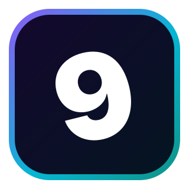
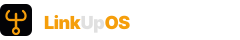
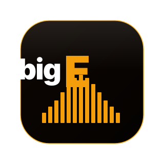

Logo Audit — Level9 Brand Family
Every unique logo SVG found across 6 site repos and marketing-assets/, deduplicated by md5 hash, rendered at multiple sizes against the canonical site background (#030306).
Brand color: violet → cyan → teal gradient. The "9" wordmark in white, tilted -14°.



Brand: amber/silver compass rose. Dominant white North needle = leadership / direction. Refined from concept #07.


Brand: cyan / sky-blue / violet six-shape interlocking mark with 180° rotational symmetry. From the original Asset 5 paths.


Brand: amber upside-down anchor. Currently exists only as a 32×32 favicon stroke icon and a horizontal wordmark. No 320×320 family-format chip.

🚨 Gap: brand-agent needs to design
320×320 family-format chip with amber edge gradient + an elaborated anchor mark (filled paths, not the simple Lucide stroke icon). Should match the visual weight of Level9 / Eric / LucidORG / Big E chips.
Brand: emerald orchestration. Currently exists only as a 32×32 chevron favicon. No 320×320 family-format chip.
🚨 Gap: brand-agent needs to design
320×320 family-format chip with emerald edge + an orchestration mark. Concept ideas: nested chevrons (multi-tier orchestration), a conductor's baton, an agent fleet visualization (3+ connected nodes), or a command-bridge mark.
Brand: violet decision intelligence. You said 3 versions exist — only 1 found. The found version is polished but doesn't match the family chip aesthetic.

🚨 Gap: brand-agent needs to design (per your "fine surface that")
320×320 family-format chip with violet edge + a decision-engine / executive-room mark. Concept ideas: 10-point decision room visualization (the StratOS ELT chamber), a strategic compass with decision vectors, or a deliberation-rounds mark.
Brand: slate methodology. Currently exists only as a 32×32 alignment-bars favicon. No 320×320 family-format chip.
🚨 Gap: brand-agent needs to design
320×320 family-format chip with slate edge + the alignment-bars metaphor scaled up. Could also pull in the 4-pressure-point cycle visual since Playbook is the install manual for the cycle.
Brand: amber music project. "bigE" wordmark + 13-bar mountain equalizer. Already in family chip format.

Brand color confirmed: blues (per your latest message). Currently the only mark is wrong-color amber. The nextgenintern-site repo has zero SVG logos at all.
🚨 Gap: brand-agent needs to design from scratch
Full set in family format: 320×320 chip + 320×320 square + 32×32 favicon + horizontal wordmark. Brand color: blues (cyan-to-sky-to-deep-blue gradient). Concept: education, next generation, internship-to-career bridge. Mark could suggest: rising arc, bridge, or step-pattern (advancement metaphor).
Brand: amber umbrella over LinkupOS + ABM Engine + AutoCS pods. No logo exists anywhere in the workspace.
🚨 Gap: brand-agent designs from scratch
320×320 family-format chip in amber. The mark should suggest "umbrella over multiple pods." Concept ideas: literal umbrella with 3 sub-shapes, 3 connected nodes (anchor + outbound arrow + care heart), or an "O" with 3 inner orbits.
Confirm canonicals + flag any rejections. I'll then populate src/assets/logos/<brand>/ in the package and hand the gap list to brand-agent.
| Brand | My picks | Status | Brand-agent task |
|---|---|---|---|
| Level9 | 1chip + 2square | Complete | — |
| Eric Hathaway | 5chip + 4square | Complete | — |
| LucidORG | 8chip + 7square | Mini-mark wrong color | Replace #9 with cyan version |
| LinkupOS | 11wordmark only | No chip | Design 320×320 amber chip |
| CommandOS | — | No chip | Design 320×320 emerald chip |
| StratOS | — | Off-family aesthetic | Design 320×320 violet family chip |
| COO Playbook | — | No chip | Design 320×320 slate chip |
| Big E Sessions | 16canonical | Complete | — |
| NextGenIntern | — | No chip + wrong color | Design full set in blues |
| OutboundOS | — | Does not exist | Design from scratch (amber umbrella) |